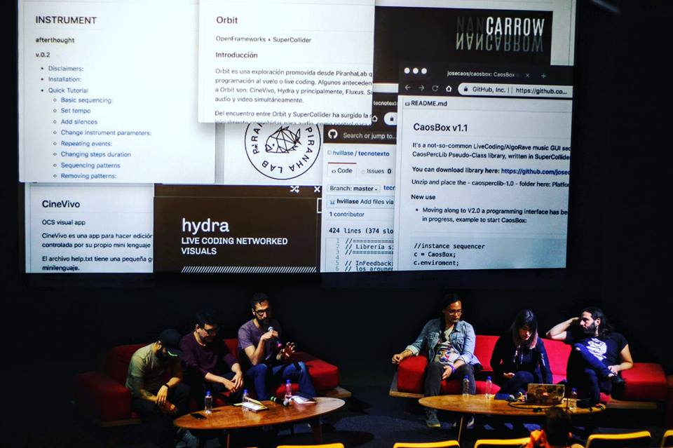
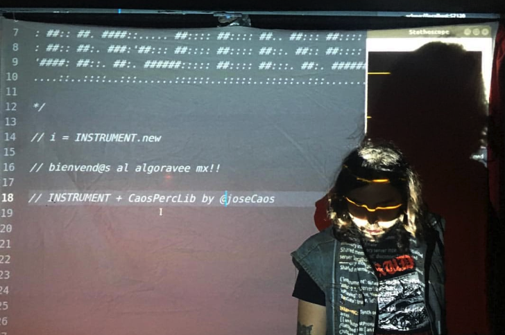
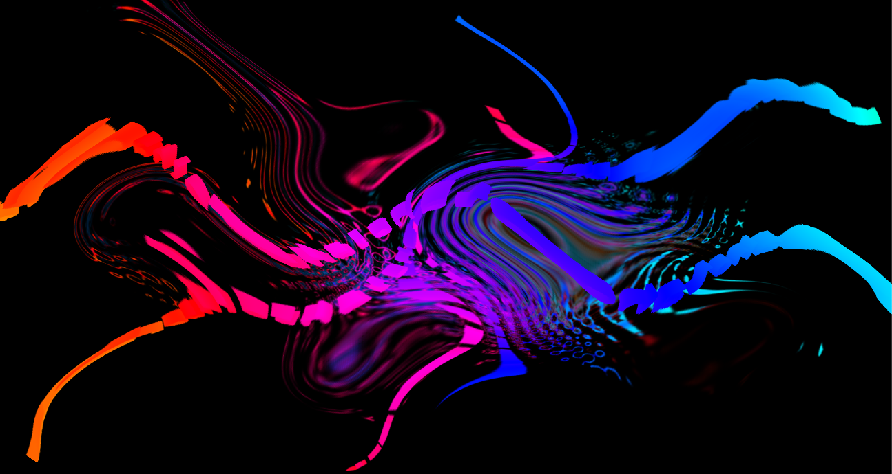
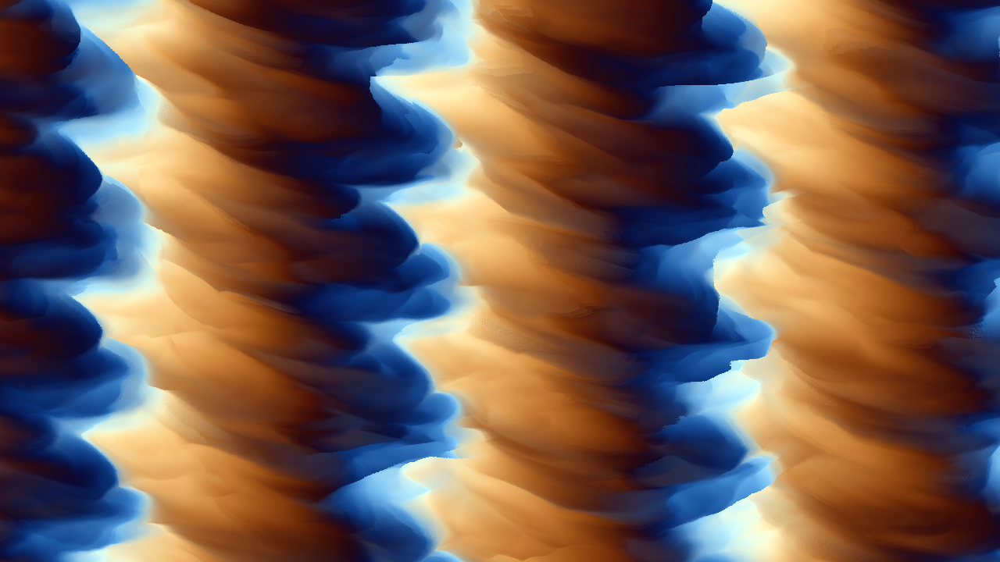
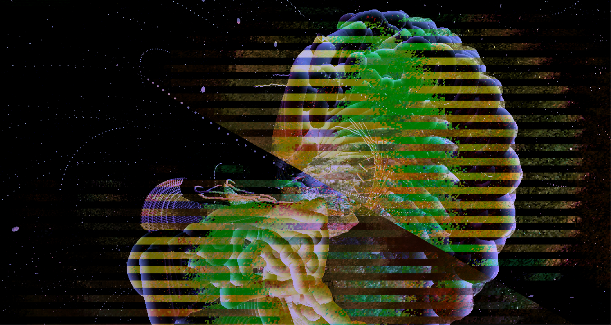
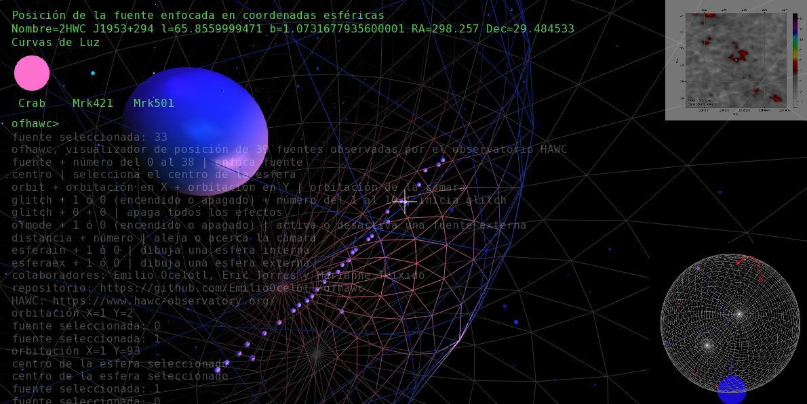

Proyectos
Ciclo de Talleres en CCD
El ciclo de talleres en el Centro de Cultura Digital se realizará una vez por mes de febrero a junio de 2019. El proyecto es apoyado por el Programa de Apoyo a la Docencia, Investigación y Difusión de las Artes (PADID) y es el resultado de la colaboración con el Laboratorio de Tecnologías Libres cel Centro de Cultura Digital.
PiranhaLab es una iniciativa que surge en el contexto de la conformación de comunidades que practican y reflexionan en torno a la programación al vuelo o live coding. El live coding es una práctica performática que se basa en técnicas de programación para la síntesis de audio y video, lo cual, posibilita la creación sinestésica audiovisual. Los practicantes de esta actividad o livecoders “exponen y re-acomodan las entrañas del software al mismo tiempo que generan música improvisada y/o visuales”[1].
A través de este ciclo, el laboratorio busca visibilizar desarrollos de software[2] en México y América Latina que mediante código de programación, persiguen la creación de música y video en vivo. De manera paralela, busca explorar las posibilidades pedagógicas del código a partir de la enseñanza de habilidades técnicas y estéticas desde la integración sonido-imagen por medio de la computadora.
SuperCollider, ChucK, Fluxus, Overtone entre otros, son algunos de los entornos más populares que existen para hacer live coding. Basadas en éstas, existen herramientas de alto nivel que permiten hacer exploraciones rápidas y expresivas basadas en sistemas personalizados como Tidal Cycles, ixiLang y Sonic Pi. Éste tipo de programas aprovechan las posibilidades de motores de audio y video y están construidas en torno de conceptos específicos que permiten explorar el lado expresivo de los lenguajes de programación.
La motivación por trabajar en este tipo de entornos ha sido bien recibida en países de América latina. Incluso, existen antecedentes significativos como el Simposio Internacional de Live Coding /*vivo*/, organizado por el taller de audio del Centro Multimedia de 2012 a 2014, que ha servido de antecedente para la configuración de una comunidad local que interactúa con una comunidad internacional. Festivales y conferencias herederas y coincidentes con esta iniciativa, como la Conferencia Internacional de Live Coding, Festival ART, Festival en Tiempo Real, Festival Transpiksel, Reudo o los Algoraves organizados en todo el mundo, han ofrecido un espacio de reconocimiento para artistas, públicos y programadores que practican, desarrollan, estudian y reflexionan en torno a las posibilidades artísticas y expresivas del código en latitudes latinoamericanas. Estos espacios han permitido reconocer(nos) como usuarios pero también como desarrolladores de herramientas de alto nivel. Los desarrollos impulsados en este ciclo de talleres son:
CineVivo - Esteban Betancur
CineVivo es una aplicación para hacer Live Coding con muestras de video y cámaras en tiempo real y que puede ser controlada por su propio mini lenguaje o usando el protocolo OSC. La interfaz de texto que controla los mensajes OSC es personalizable y permite a los usuarios establecer conexiones poéticas, metafóricas o instrumentales que impactan en el contenido simbólico y significativo del performance dando así, riqueza a la composición visual.
Caosbox - José Carlos Hasbun
CaosBox es un secuenciador/procesador para la biblioteca ‘caosperclib’ escrita en Supercollider. Esta librería utiliza síntesis de audio y prescinde de muestras de audio. El usuario improvisa bajo la premisa de la programación al vuelo e interactúa con una interfaz gráfica de usuario para controlar los parámetros de cada función percusiva pensadas como melodía, ritmos y armonía.
Instrument - Rodrigo Frenk
Es una aplicación multiplataforma construida con HTML y Javascript, utilizando electron, supercolliderjs y node-midi. SuperCollider es el motor de audio. Es un sistema pensado para músicos o bandas que quieran integrar herramientas electrónicas a sus actos en vivo. Es una extensión de los músicos y de los ensambles, ofreciendo control de sintetizadores y procesamiento de señal, a la vez que herramientas de audio para sampleo, live-looping y mezcla. La idea principal es que todos los sonidos electrónicos que podamos escuchar en un concierto provengan de acciones físicas de los músicos.
Canon Generator - Diego Villaseñor y Alejandro Franco Briones
Esta librería es una colección que tiene por objetivo crear cánones temporales inspirados en las ideas de Conlon Nancarrow. Canon Generator permite experimentar las ideas de Nancarrow, escucharlas, sonorizarlas a partir del análisis de datos. El protocolo OSC permite darle una salida de SuperCollider al Canon desarrollado con una interfaz gráfica que permite visualizar el movimiento del cánon, creando partituras visuales.

Orbit/PiranhaLib - Emilio Ocelotl y Marianne Teixido
PiranhaLib es una serie de clases de SuperCollider que sirven para controlar audio/video. La idea central del proyecto se basa en generadores de envolventes que controlan el sonido. La librería parte de la interrelación de muestras de audio previamente grabadas y síntesis de audio. para el video, PiranhaLib se comunica con aplicaciones exteriores escritas en la plataforma OpenFrameworks.
Hydra - Olivia Jack
Herramienta para hacer visuales en red por medio de live coding en el explorador. Está inspirado en los sintetizadores modulares análogos. Hydra usa múltiples búferes de imagen que se combinan dinámicamente para crear composiciones visuales. Es posible generar visuales en formato colaborativo por su formato en red. Imagen tomada de Hydra Patterns
Notas
1. Toplap. Recuperado de https://toplap.org/about/ (Consultado el 30 de julio de 2018)
2. El presente proyecto considera desarrollo como el proceso de concebir, diseñar, programar, documentar, probar y resolver problemas en la creación y mantenimiento de software. En particular, el proyecto toma en consideración un desarrollo como la versión mínima estable con posibilidades de expansión y mejora.
Orbit
Orbit es una proyecto abierto multiplataforma (osx, linux, win) para audio y visuales basado en OpenFrameworks. El proyecto aprovecha las posibilidades del texto como interfaz. A través de una sintaxis sencilla de invocación de instrucciones, es posible utilizar Orbit para visualizar el código declarado en SuperCollider y hacerlo interactuar con videos, objetos 3d y texto.
Orbit cuenta con 5 posibles capas de control: 1) mensajes provenientes de otras aplicaciones, tanto de texto como de control, 2) Texto que se escribe directamente en pantalla, 3) El punto de vista y la posición de la cámara, 4) Objetos tridimensionales, previamente realizados o primitivos de OF y 4) Shaders y efectos que modifican la imagen.
ofhawc
Visualizador basado en OpenFrameworks de los datos de posición y curvas de luz de fuentes observadas. Estos datos fueron recopilados por el Observatorio de Rayos Gamma HAWC (High-Altitude Water Cherenkov Gamma-Ray Observatory). El proyecto surge a propósito del Hackatón Astronómico y es parte de un proyecto colaborativo que se complementa con 2HAWC y sc_hawc y parte de la práctica performática del Live Coding.
